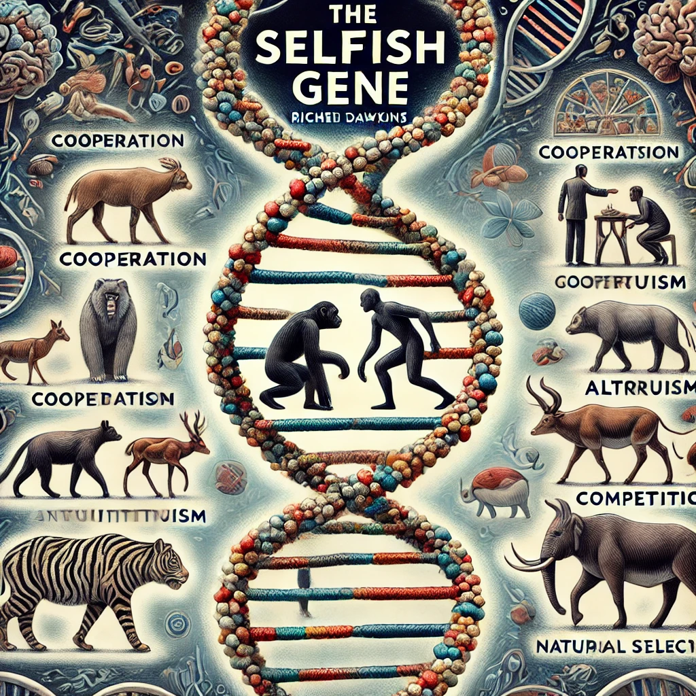

자연 선택이 개체가 아닌, 생존에 유리한 유전자를 퍼트리는 방향으로 진행된다는 관점이 인상깊었다.
어떤 개체의 협력, 이타적 행동, 교류, 그리고 배신, 이기적 행동, 차단 행위 모두가
유전자의 생존과 번식에 유리하게 작용시키기 위한 전략이라는 사실이 흥미롭게 느껴졌다.

감상평에 대한 AI평가
✨작성하신 감상문은 *"이기적 유전자"*의 핵심 개념을 정확하게 짚고 있습니다.
✨유전자 수준에서 자연 선택이 이루어진다는 점과 생존 전략으로서의 행동들이 흥미롭게 다가옵니다.
✨책 속 사례를 구체적으로 언급하면 더 설득력 있는 감상이 될 것입니다.
✨개인적인 질문이나 통찰을 추가하면 더욱 깊이 있는 글이 될 것입니다.